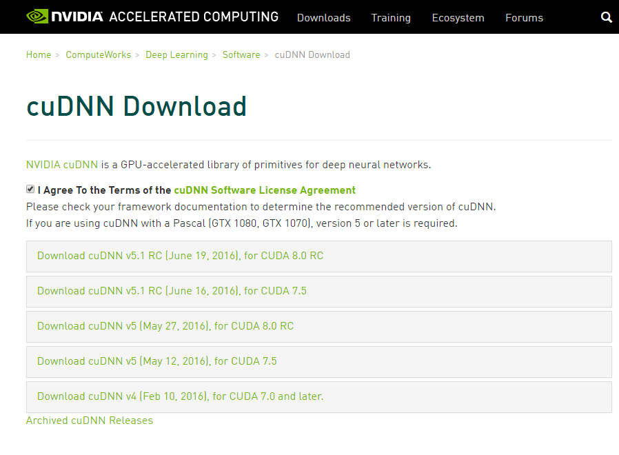

前回は指紋の紋様を分類してみました。
cuDNN
最近、Caffe for Microsoftが更新され、本家のBVLC/Caffeと同期がとられました。結構重要な更新があるのですが、cuDNN 5.0に対応しました。
対応方法は CommonSettings.props を少し書き換えるだけですが、パフォーマンスの向上が望めるので積極的に利用しましょう。
ダウンロード方法は以前と変わりません。
利用するCUDAによっては、cuDNN 5.0は利用できません。

現時点で、cuDNN 5.0は CUDA 7.5以降限定のようです。
Windowsには、Windows 7とWindows 10向けのパッケージが用意されていますので、適切なものをダウンロードしてください。
なおダウンロードしたcuDNNを展開する際、フォルダ構成が
- XXXX/cuda/bin
- XXXX/cuda/include
- XXXX/cuda/lib
になるようにしてください。
ビルド
CommonSettings.propsのCuDNNPathをcuDNN 5.0の配置フォルダに変更するだけです。
前述の場合、XXXXまでをフルパスで指定します。
以上で完了です。
Conclusion
実際、職場でビルドしたバイナリを使用した場合、4.0と比べて10%ほどパフォーマンスが向上していました。